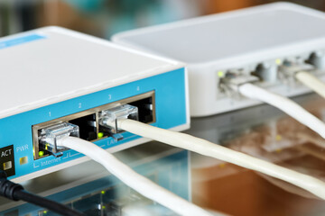

مقدمة في أجهزة وأنظمة مايكروتك
نبذة عن شركة مايكروتك
شركة مايكروتك (MikroTik) هي شركة لاتفية تأسست عام 1996 في ريغا، لاتفيا. بدأت الشركة كمزود لحلول الشبكات اللاسلكية والسلكية، وتطورت لتصبح واحدة من أهم الشركات المصنعة لأجهزة الشبكات في العالم، خاصة في قطاع الشركات الصغيرة والمتوسطة ومزودي خدمة الإنترنت.
في البداية، كانت مايكروتك تركز على تطوير برمجيات التوجيه والشبكات، وأطلقت نظام التشغيل الخاص بها RouterOS. ومع مرور الوقت، بدأت الشركة في تصنيع أجهزتها الخاصة تحت اسم RouterBOARD، والتي تأتي مع نظام RouterOS مثبتًا مسبقًا.
اليوم، تقدم مايكروتك مجموعة واسعة من منتجات الشبكات، بما في ذلك أجهزة التوجيه، والمبدلات، ونقاط الوصول اللاسلكية، وأجهزة LTE، وحلول الألياف البصرية، وغيرها. تشتهر منتجات مايكروتك بأسعارها المعقولة مقارنة بالمنافسين، مع توفير ميزات متقدمة وأداء قوي.
نظام التشغيل RouterOS
RouterOS هو نظام التشغيل الأساسي لأجهزة مايكروتك، وهو نظام قائم على نواة Linux مصمم خصيصًا لأجهزة الشبكات. يوفر RouterOS مجموعة شاملة من ميزات الشبكات، مما يجعله مناسبًا لمجموعة واسعة من التطبيقات، من الشبكات المنزلية البسيطة إلى شبكات مزودي خدمة الإنترنت المعقدة.
ميزات RouterOS الرئيسية
يتميز نظام RouterOS بمجموعة واسعة من الميزات، منها:
1. التوجيه (Routing)
يدعم RouterOS مجموعة متنوعة من بروتوكولات التوجيه، بما في ذلك:
- التوجيه الثابت (Static Routing)
- بروتوكول معلومات التوجيه (RIP)
- بروتوكول بوابة الحدود (BGP)
- بروتوكول أولاً المسار الأقصر (OSPF)
- بروتوكول MME
- توجيه متعدد البث (Multicast Routing)
2. التبديل (Switching)
يوفر RouterOS ميزات تبديل متقدمة، بما في ذلك:
- الشبكات المحلية الافتراضية (VLANs)
- بروتوكول شجرة الامتداد (STP/RSTP)
- التحكم في الوصول استنادًا إلى المنفذ (Port-based Access Control)
- مرآة المنفذ (Port Mirroring)
- التحكم في العاصفة البث (Broadcast Storm Control)
3. الشبكات اللاسلكية (Wireless)
يدعم RouterOS مجموعة واسعة من ميزات الشبكات اللاسلكية، بما في ذلك:
- نقطة وصول (Access Point) ووضع العميل (Client Mode)
- جسر لاسلكي (Wireless Bridge)
- شبكة WDS (Wireless Distribution System)
- Nstreme و Nv2 (بروتوكولات مايكروتك اللاسلكية المخصصة)
- دعم 802.11a/b/g/n/ac
- التحكم في الوصول استنادًا إلى العنوان MAC
4. إدارة النطاق الترددي (Bandwidth Management)
يوفر RouterOS أدوات قوية لإدارة النطاق الترددي، بما في ذلك:
- صفوف الانتظار (Queues)
- شجرة صفوف الانتظار (Queue Trees)
- صفوف الانتظار البسيطة (Simple Queues)
- PCQ (Per Connection Queue)
- تشكيل حركة المرور (Traffic Shaping)
- تحديد أولويات حركة المرور (Traffic Prioritization)
5. الجدار الناري وتصفية حزم البيانات (Firewall and Packet Filtering)
يتضمن RouterOS جدارًا ناريًا قويًا مع ميزات متقدمة، بما في ذلك:
- تصفية حزم البيانات بناءً على عناوين IP والمنافذ والبروتوكولات
- فحص حالة الاتصال (Stateful Inspection)
- تصفية طبقة التطبيق (Layer 7 Filtering)
- قوائم العناوين (Address Lists)
- تتبع الاتصالات (Connection Tracking)
- الحماية من هجمات DDoS
6. خدمات الشبكة (Network Services)
يوفر RouterOS مجموعة متنوعة من خدمات الشبكة، بما في ذلك:
- خادم DHCP وعميل DHCP
- خادم DNS وعميل DNS
- خادم NTP
- خادم RADIUS
- خادم UPnP
- خادم TFTP
7. الشبكات الخاصة الافتراضية (VPN)
يدعم RouterOS مجموعة متنوعة من تقنيات VPN، بما في ذلك:
- PPTP
- L2TP
- IPsec
- OpenVPN
- SSTP
- WireGuard
8. الإدارة والمراقبة (Management and Monitoring)
يوفر RouterOS أدوات متقدمة للإدارة والمراقبة، بما في ذلك:
- واجهة سطر الأوامر (CLI)
- واجهة ويب (WebFig)
- تطبيق سطح المكتب WinBox
- تطبيق الجوال (MikroTik app)
- دعم SNMP
- أدوات المراقبة والتشخيص
- النسخ الاحتياطي والاستعادة
إصدارات RouterOS
يتوفر RouterOS في عدة إصدارات مختلفة، تختلف في الميزات والسعر:
1. الإصدار المجاني (Demo)
إصدار تجريبي مجاني يعمل لمدة 24 ساعة فقط، ويتضمن جميع الميزات. مناسب للاختبار والتعلم.
2. الإصدار 3 (Level 3)
إصدار أساسي يتضمن ميزات أساسية للتوجيه والتبديل والشبكات اللاسلكية. مناسب للشبكات المنزلية والمكاتب الصغيرة.
3. الإصدار 4 (Level 4)
إصدار متوسط يتضمن ميزات إضافية مثل دعم الشبكات الافتراضية الخاصة (VPN) وإدارة النطاق الترددي المتقدمة. مناسب للشركات الصغيرة والمتوسطة.
4. الإصدار 5 (Level 5)
إصدار متقدم يتضمن جميع الميزات المتاحة في RouterOS. مناسب لمزودي خدمة الإنترنت والشركات الكبيرة.
5. الإصدار 6 (Level 6)
إصدار خاص لمزودي خدمة الإنترنت، يتضمن جميع الميزات بالإضافة إلى دعم عدد أكبر من الاتصالات المتزامنة.
واجهات إدارة RouterOS
يوفر RouterOS عدة واجهات للإدارة، مما يتيح للمستخدمين اختيار الطريقة الأنسب لاحتياجاتهم:
1. واجهة سطر الأوامر (CLI)
واجهة سطر الأوامر التقليدية، يمكن الوصول إليها عبر SSH أو Telnet أو المنفذ التسلسلي. توفر أقصى قدر من المرونة والتحكم، وهي مثالية للمستخدمين المتقدمين والنصوص البرمجية.
2. واجهة الويب (WebFig)
واجهة ويب سهلة الاستخدام، يمكن الوصول إليها عبر متصفح الويب. توفر وصولاً سهلاً إلى معظم ميزات RouterOS، وهي مناسبة للمستخدمين الذين يفضلون واجهة رسومية.
3. تطبيق WinBox
تطبيق سطح مكتب لنظام Windows يوفر واجهة رسومية كاملة لإدارة RouterOS. يمكنه الاتصال بأجهزة مايكروتك عبر عنوان IP أو عنوان MAC، وهو الخيار المفضل للعديد من مسؤولي الشبكات.
4. تطبيق الجوال (MikroTik app)
تطبيق للهواتف الذكية والأجهزة اللوحية يوفر وصولاً محدودًا إلى ميزات RouterOS. مناسب للمراقبة الأساسية وإدارة الشبكة أثناء التنقل.
5. API
واجهة برمجة تطبيقات (API) تسمح للمطورين بإنشاء تطبيقات مخصصة للتفاعل مع RouterOS. مفيدة لأتمتة المهام وتكامل RouterOS مع أنظمة أخرى.
أنواع أجهزة مايكروتك
تقدم مايكروتك مجموعة واسعة من الأجهزة لتلبية احتياجات مختلف المستخدمين، من الشبكات المنزلية البسيطة إلى شبكات مزودي خدمة الإنترنت المعقدة. فيما يلي نظرة عامة على الفئات الرئيسية لأجهزة مايكروتك:
1. سلسلة hAP (Home Access Point)
سلسلة hAP هي مجموعة من أجهزة التوجيه اللاسلكية المصممة للاستخدام المنزلي والمكاتب الصغيرة. تتميز هذه الأجهزة بحجمها الصغير وسهولة الإعداد وتكلفتها المنخفضة.
أمثلة على أجهزة سلسلة hAP:
- hAP lite: جهاز توجيه لاسلكي أساسي مع 3 منافذ Ethernet ودعم Wi-Fi 2.4 GHz.
- hAP: جهاز توجيه لاسلكي متوسط المستوى مع 5 منافذ Ethernet ودعم Wi-Fi 2.4 GHz.
- hAP ac: جهاز توجيه لاسلكي متقدم مع 5 منافذ Ethernet ودعم Wi-Fi ثنائي النطاق (2.4 GHz و 5 GHz).
- hAP ac²: جهاز توجيه لاسلكي عالي الأداء مع 5 منافذ Gigabit Ethernet ودعم Wi-Fi ثنائي النطاق (2.4 GHz و 5 GHz) ومعايير 802.11ac.
2. سلسلة RB (RouterBOARD)
سلسلة RB هي مجموعة من لوحات التوجيه الأساسية التي يمكن تركيبها في حاويات مختلفة. توفر هذه اللوحات مرونة في التكوين وقابلية للتوسع، وهي مناسبة للمستخدمين الذين يحتاجون إلى حلول مخصصة.
أمثلة على أجهزة سلسلة RB:
- RB750Gr3: جهاز توجيه صغير مع 5 منافذ Gigabit Ethernet.
- RB3011: جهاز توجيه عالي الأداء مع 10 منافذ Gigabit Ethernet ومنفذ SFP.
- RB4011: جهاز توجيه متقدم مع 10 منافذ Gigabit Ethernet ومنفذ SFP+ ودعم Wi-Fi اختياري.
- RB5009: جهاز توجيه عالي الأداء مع 8 منافذ Gigabit Ethernet ومنفذ SFP+ ومعالج قوي.
3. سلسلة CCR (Cloud Core Router)
سلسلة CCR هي مجموعة من أجهزة التوجيه عالية الأداء المصممة للشبكات الكبيرة ومزودي خدمة الإنترنت. تتميز هذه الأجهزة بمعالجات قوية متعددة النوى وذاكرة كبيرة وقدرات توجيه عالية.
أمثلة على أجهزة سلسلة CCR:
- CCR1009: جهاز توجيه مع معالج 9 نوى و8 منافذ Gigabit Ethernet ومنافذ SFP.
- CCR1016: جهاز توجيه مع معالج 16 نواة و12 منفذ Gigabit Ethernet ومنافذ SFP.
- CCR1036: جهاز توجيه عالي الأداء مع معالج 36 نواة و12 منفذ Gigabit Ethernet ومنافذ SFP.
- CCR2004: جهاز توجيه حديث مع معالج 4 نوى ومنافذ SFP+ و25G SFP28.
4. سلسلة CRS (Cloud Router Switch)
سلسلة CRS هي مجموعة من أجهزة التبديل المدارة التي تجمع بين قدرات التوجيه والتبديل. تتميز هذه الأجهزة بعدد كبير من منافذ Ethernet ودعم VLAN وميزات تبديل Layer 3.
أمثلة على أجهزة سلسلة CRS:
- CRS109: جهاز تبديل مع 8 منافذ Gigabit Ethernet ومنفذ SFP.
- CRS125: جهاز تبديل مع 24 منفذ Gigabit Ethernet ومنفذ SFP.
- CRS317: جهاز تبديل عالي الأداء مع 16 منفذ SFP+ ومنفذ Gigabit Ethernet.
- CRS326: جهاز تبديل مع 24 منفذ Gigabit Ethernet و2 منفذ SFP+.
5. سلسلة wAP (Wireless Access Point)
سلسلة wAP هي مجموعة من نقاط الوصول اللاسلكية المصممة للاستخدام الداخلي والخارجي. تتميز هذه الأجهزة بتصميم مقاوم للعوامل الجوية وأداء لاسلكي قوي.
أمثلة على أجهزة سلسلة wAP:
- wAP: نقطة وصول لاسلكية أساسية مع دعم Wi-Fi 2.4 GHz.
- wAP ac: نقطة وصول لاسلكية متقدمة مع دعم Wi-Fi ثنائي النطاق (2.4 GHz و 5 GHz).
- wAP R: نقطة وصول لاسلكية مع دعم LTE للاتصال بالإنترنت عبر شبكات الجوال.
- wAP ac LTE: نقطة وصول لاسلكية متقدمة مع دعم Wi-Fi ثنائي النطاق وLTE.
6. سلسلة LHG و SXT و Dish (أجهزة الاتصال اللاسلكي بعيد المدى)
هذه السلاسل تضم أجهزة الاتصال اللاسلكي بعيد المدى المصممة لإنشاء روابط نقطة إلى نقطة (Point-to-Point) أو نقطة إلى عدة نقاط (Point-to-Multipoint). تتميز هذه الأجهزة بهوائيات عالية الكسب وأداء لاسلكي قوي.
أمثلة على أجهزة الاتصال اللاسلكي بعيد المدى:
- LHG 5: جهاز اتصال لاسلكي مع هوائي طبق 24.5 dBi يعمل على تردد 5 GHz.
- SXT Lite5: جهاز اتصال لاسلكي مع هوائي قطاعي 16 dBi يعمل على تردد 5 GHz.
- Dish 5: جهاز اتصال لاسلكي مع هوائي طبق كبير 30 dBi يعمل على تردد 5 GHz.
- LDF 5: جهاز اتصال لاسلكي صغير مع هوائي 9 dBi يعمل على تردد 5 GHz.
7. سلسلة LTE (أجهزة الاتصال بشبكات الجوال)
سلسلة LTE هي مجموعة من أجهزة الاتصال بشبكات الجوال المصممة لتوفير اتصال بالإنترنت عبر شبكات LTE/4G. تتميز هذه الأجهزة بدعم شرائح SIM وسرعات اتصال عالية.
أمثلة على أجهزة سلسلة LTE:
- LtAP mini: جهاز توجيه LTE صغير مع دعم Wi-Fi 2.4 GHz و2 منفذ Ethernet.
- LtAP: جهاز توجيه LTE متقدم مع دعم Wi-Fi 2.4 GHz و3 منافذ Ethernet وGPS.
- SXT LTE: جهاز اتصال LTE خارجي مع هوائي عالي الكسب ومنفذ Ethernet.
- LHG LTE: جهاز اتصال LTE خارجي مع هوائي طبق عالي الكسب ومنفذ Ethernet.
8. سلسلة CRS (أجهزة الألياف البصرية)
تقدم مايكروتك أيضًا مجموعة من أجهزة الألياف البصرية المصممة للاتصال بشبكات الألياف البصرية. تتميز هذه الأجهزة بدعم منافذ SFP و SFP+ وسرعات اتصال عالية.
أمثلة على أجهزة الألياف البصرية:
- FiberBox: جهاز توجيه مع منفذ GPON (SFP) ومنافذ Ethernet ودعم Wi-Fi.
- GPEN21: جهاز GPON ONU مع منفذ GPON ومنفذ Ethernet.
- CRS305-1G-4S+: جهاز تبديل مع 4 منافذ SFP+ ومنفذ Gigabit Ethernet.
- CRS309-1G-8S+: جهاز تبديل مع 8 منافذ SFP+ ومنفذ Gigabit Ethernet.
مميزات أجهزة وأنظمة مايكروتك
تتميز أجهزة وأنظمة مايكروتك بعدة مميزات جعلتها خيارًا شائعًا في عالم الشبكات:
1. التكلفة المنخفضة
تعتبر أجهزة مايكروتك أقل تكلفة بشكل عام مقارنة بالمنافسين مثل Cisco و Juniper، مع توفير ميزات متقدمة. هذا يجعلها خيارًا جذابًا للشركات الصغيرة والمتوسطة ومزودي خدمة الإنترنت الصغار.
2. الميزات المتقدمة
على الرغم من تكلفتها المنخفضة، توفر أجهزة مايكروتك مجموعة واسعة من الميزات المتقدمة، بما في ذلك التوجيه المتقدم، وإدارة النطاق الترددي، والجدران النارية، وVPN، والشبكات اللاسلكية، وغيرها.
3. المرونة والقابلية للتخصيص
يوفر نظام RouterOS مرونة كبيرة في التكوين والقابلية للتخصيص، مما يسمح للمستخدمين بتكييف أجهزة مايكروتك لتلبية احتياجاتهم المحددة. يمكن استخدام نفس الجهاز كموجه، أو جدار ناري، أو نقطة وصول لاسلكية، أو خادم VPN، أو مزيج من هذه الوظائف.
4. واجهات إدارة متعددة
توفر مايكروتك عدة واجهات للإدارة، بما في ذلك واجهة سطر الأوامر، وواجهة الويب، وتطبيق WinBox، وتطبيق الجوال، وAPI. هذا يتيح للمستخدمين اختيار الطريقة الأنسب لاحتياجاتهم ومستوى خبرتهم.
5. استقرار النظام
تشتهر أجهزة مايكروتك باستقرارها وموثوقيتها، حيث يمكنها العمل لفترات طويلة دون الحاجة إلى إعادة التشغيل. هذا يجعلها مناسبة للاستخدامات الحرجة مثل شبكات مزودي خدمة الإنترنت.
6. مجتمع نشط
تتمتع مايكروتك بمجتمع نشط من المستخدمين والمطورين الذين يشاركون المعرفة والخبرات والحلول. هناك العديد من المنتديات والمجموعات والموارد عبر الإنترنت المخصصة لمايكروتك، مما يسهل على المستخدمين الجدد التعلم والحصول على المساعدة.
7. التحديثات المنتظمة
تقوم مايكروتك بإصدار تحديثات منتظمة لنظام RouterOS، مما يضيف ميزات جديدة ويحسن الأداء ويصلح الثغرات الأمنية. يمكن للمستخدمين تحديث أجهزتهم بسهولة عبر واجهات الإدارة المختلفة.
8. دعم البروتوكولات القياسية
تدعم أجهزة مايكروتك مجموعة واسعة من البروتوكولات القياسية، مما يسهل دمجها مع أجهزة وأنظمة أخرى في الشبكة. هذا يوفر مرونة في تصميم الشبكة ويسمح بالتوسع المستقبلي.
استخدامات أجهزة وأنظمة مايكروتك
تستخدم أجهزة وأنظمة مايكروتك في مجموعة متنوعة من السيناريوهات، بدءًا من الشبكات المنزلية البسيطة إلى شبكات مزودي خدمة الإنترنت المعقدة. فيما يلي بعض الاستخدامات الشائعة:
1. الشبكات المنزلية والمكاتب الصغيرة
تعتبر أجهزة مايكروتك مثل سلسلة hAP مثالية للشبكات المنزلية والمكاتب الصغيرة. توفر هذه الأجهزة اتصالاً لاسلكيًا موثوقًا، وميزات أمان أساسية، وإدارة بسيطة للشبكة.
2. الشركات الصغيرة والمتوسطة
تستخدم الشركات الصغيرة والمتوسطة أجهزة مايكروتك مثل سلسلة RB وCRS لبناء شبكات موثوقة وفعالة من حيث التكلفة. توفر هذه الأجهزة ميزات متقدمة مثل VLANs، وVPN، والجدران النارية، وإدارة النطاق الترددي.
3. مزودو خدمة الإنترنت (ISPs)
تعتبر أجهزة مايكروتك شائعة بين مزودي خدمة الإنترنت، خاصة الصغار والمتوسطين. توفر أجهزة مثل سلسلة CCR وCRS قدرات توجيه وتبديل عالية الأداء، بالإضافة إلى ميزات متقدمة مثل BGP، وMPLS، وإدارة النطاق الترددي، وحسابات المستخدمين.
4. الشبكات اللاسلكية
تستخدم أجهزة مايكروتك على نطاق واسع في الشبكات اللاسلكية، سواء كانت شبكات Wi-Fi داخلية أو شبكات لاسلكية بعيدة المدى. توفر أجهزة مثل سلسلة wAP وLHG وSXT حلولاً لاسلكية قوية وموثوقة لمختلف السيناريوهات.
5. الشبكات الخاصة الافتراضية (VPN)
تستخدم أجهزة مايكروتك لإنشاء شبكات خاصة افتراضية (VPN) آمنة للشركات والمؤسسات. يدعم RouterOS مجموعة متنوعة من بروتوكولات VPN، بما في ذلك PPTP، وL2TP، وIPsec، وOpenVPN، وSSTP، وWireGuard.
6. إدارة النطاق الترددي وتشكيل حركة المرور
تستخدم أجهزة مايكروتك لإدارة النطاق الترددي وتشكيل حركة المرور في الشبكات المختلفة. توفر أدوات مثل صفوف الانتظار وشجرة صفوف الانتظار وPCQ تحكمًا دقيقًا في كيفية استخدام النطاق الترددي وتوزيعه.
7. الجدران النارية وأمان الشبكة
تستخدم أجهزة مايكروتك كجدران نارية لحماية الشبكات من التهديدات الخارجية. يوفر RouterOS جدارًا ناريًا قويًا مع ميزات متقدمة مثل تصفية حزم البيانات، وفحص حالة الاتصال، وتصفية طبقة التطبيق، والحماية من هجمات DDoS.
8. التعليم والتدريب
نظرًا لتكلفتها المنخفضة وميزاتها المتقدمة، تستخدم أجهزة مايكروتك على نطاق واسع في التعليم والتدريب. توفر هذه الأجهزة بيئة عملية لتعلم مفاهيم الشبكات وتطبيقها، وهي مثالية للمختبرات التعليمية ودورات الشبكات.
خلاصة
تعتبر أجهزة وأنظمة مايكروتك خيارًا شائعًا في عالم الشبكات، وذلك بفضل تكلفتها المنخفضة، وميزاتها المتقدمة، ومرونتها، واستقرارها. توفر مايكروتك مجموعة واسعة من الأجهزة لتلبية احتياجات مختلف المستخدمين، من الشبكات المنزلية البسيطة إلى شبكات مزودي خدمة الإنترنت المعقدة.
نظام التشغيل RouterOS هو قلب أجهزة مايكروتك، ويوفر مجموعة شاملة من ميزات الشبكات، بما في ذلك التوجيه، والتبديل، والشبكات اللاسلكية، وإدارة النطاق الترددي، والجدران النارية، وVPN، وخدمات الشبكة. يمكن إدارة RouterOS عبر عدة واجهات، بما في ذلك واجهة سطر الأوامر، وواجهة الويب، وتطبيق WinBox، وتطبيق الجوال، وAPI.
في الدرس التالي، سنتعلم كيفية تركيب وإعداد أجهزة مايكروتك، بما في ذلك الإعداد الأولي، وطرق الوصول إلى واجهة الإدارة، وكيفية تحديث نظام التشغيل وتأمين الجهاز.